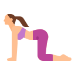
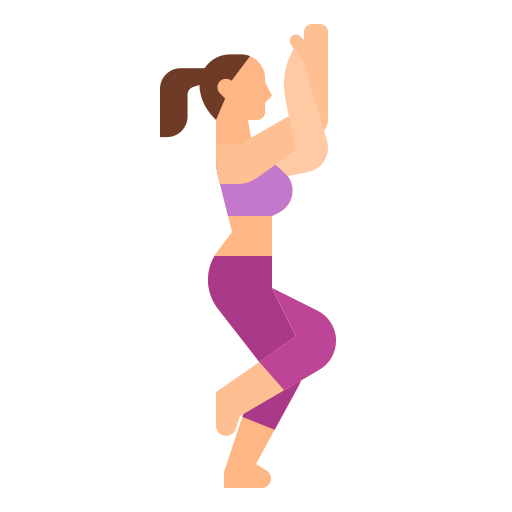
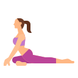
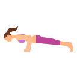
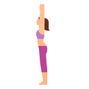

Nature-Inspired Yoga Poses
Many yoga poses are directly inspired by the elements of the natural world, helping us ground ourselves and feel more in tune with environment around us.

Tree Pose (Vrikshasana)
This pose mimics the steadiness of a tree...

Cobra Pose (Bhujangasana)
This pose resembles a snake rising from the ground...

Lotus Pose (Padmasana)
Lotus Pose is a meditative pose where the practitioner needs to sit comfortably with spine erect, crossing their legs, and hand resting on their knees.

Dolphin Pose(Ardha Pincha Mayurasana)
The practitioner needs to make an inverted V shape with their body, by lifting their torso from the middle.

Cat Pose (Marjaryasana)
Cat-like position (on all fours) and the knees should be directly under your hips and your palms facing down under your shoulders.

Camel Pose (Ustrasana)
The practitioner has to kneel down and bend his torso backward to touch the two feet. Ustrasana comes from the Sanskrit word ustra means camel.

Eagle Pose (Garudasana)
Eagle Pose is done in the standing position, by bending your knee and making a peculiar shape with both your hands.

Pigeon Pose (Kapotasana)
The practitioner needs to move one of their legs behind and the other leg in front, such that it makes an L shape.

Peacock Pose (Mayurasana)
The practitioner needs to lift their body using the strength of their hands resting on the palms such that the body becomes parallel to the ground.

Mountain Pose (Tadasana)
The practitioner needs to stand upright with feet facing forward parallel to each other. Then as you inhale, you need to raise your arms above your head and interlock your fingers with palms facing upwards.